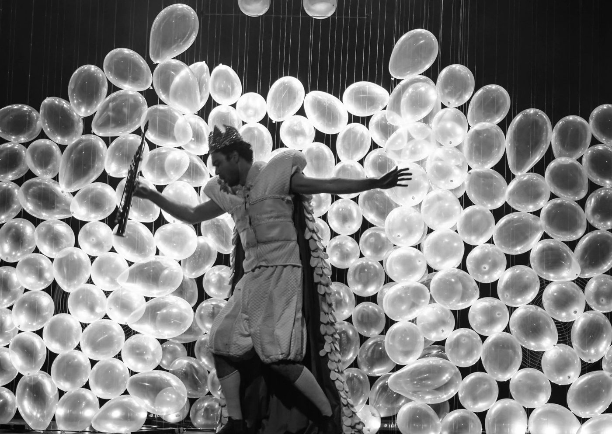

Foto — João Cláudio de Sena
Teatro
Espetáculo infantil “A Fábrica de Ventos” chega ao teatro do Sesc Pompeia
Apresentado pela renomada companhia “Trupe Lona Preta” o espetáculo “A Fábrica de Ventos” chega ao teatro trazendo fábulas para o público infantil e isso regado…